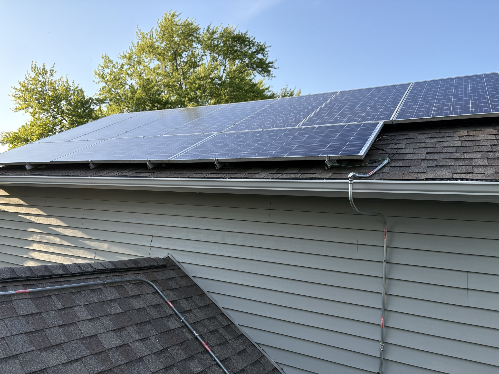
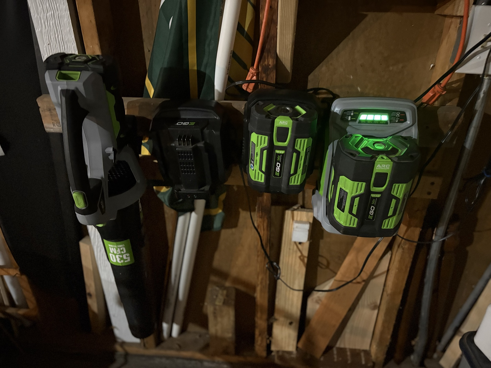

Here are some steps that I take to reduce my carbon footprint:
A good way to reduce your carbon footprint is to invest in solar panels (if you can afford them), you use less of the city's energy, and you can save on your energy bills. In the summer time our city utility bill has been nearly cut in half than before the solar panels.

Another good way to reduce your carbon footprint is to replace your gas powered lawn tools for battery powered yard tools. Not only do they smell better, they are quieter and just as effective as the gas powered types. I have also found it quite fun to “shovel” the walks with the leaf blower on lighter snowfalls.

Reusable bags are also a great way to reduce your carbon footprint because you have less waste when shopping. I use a collapsible box that holds quite a lot of groceries. My wife also takes a reusable bag that packs into a small pouch on her business trips for when she gets her food at the local grocery stores.
If you still get the plastic bags from shopping, many grocery stores have places to return them so that they can get recycled properly.
Oftentimes recycling is doing the little things - and the little things add up.